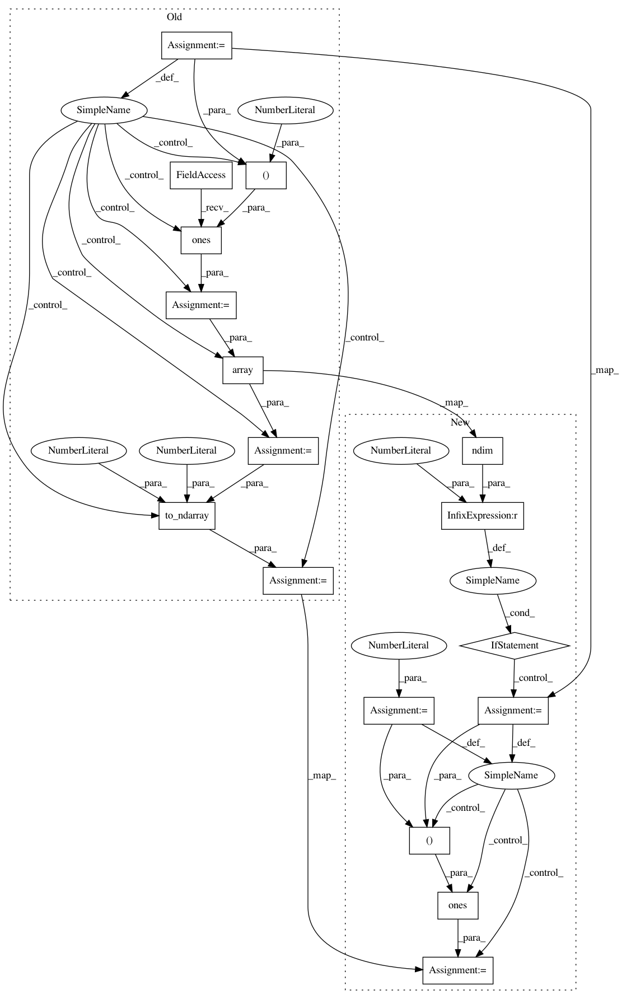

b2613a7b91f8d95953f6e6c6e9321c10f5f3db41,geomstats/learning/frechet_mean.py,,_adaptive_gradient_descent,#Any#Any#Any#Any#Any#Any#Any#,192
Before Change
raise NotImplementedError(
"The Frechet mean with adaptive gradient descent is only"
" implemented for lists of vectors, and not matrices.")
n_points = gs.shape(points)[0]
if n_points == 1:
return points
if weights is None:
weights = gs.ones((n_points, 1))
weights = gs.array(weights)
weights = gs.to_ndarray(weights, to_ndim=2, axis=1)
sum_weights = gs.sum(weights)
if init_point is None:
After Change
"The Frechet mean with adaptive gradient descent is only"
" implemented for lists of vectors, and not matrices.")
n_points = 1
if gs.ndim(points) == 2:
n_points = gs.shape(points)[0]
if n_points == 1:
return points
if weights is None:
weights = gs.ones((n_points,))
//weights = gs.array(weights)
//weights = gs.to_ndarray(weights, to_ndim=2, axis=1)
In pattern: SUPERPATTERN
Frequency: 3
Non-data size: 17
Instances
Project Name: geomstats/geomstats
Commit Name: b2613a7b91f8d95953f6e6c6e9321c10f5f3db41
Time: 2020-04-17
Author: ninamio78@gmail.com
File Name: geomstats/learning/frechet_mean.py
Class Name:
Method Name: _adaptive_gradient_descent
Project Name: geomstats/geomstats
Commit Name: c2a6307af84f81033c60a0ec77d683f18ab0aa93
Time: 2020-04-16
Author: ninamio78@gmail.com
File Name: geomstats/learning/frechet_mean.py
Class Name:
Method Name: _adaptive_gradient_descent
Project Name: geomstats/geomstats
Commit Name: b9037326a072fa5d5ff1b8a3ec9b9413f2de5117
Time: 2020-04-17
Author: ninamio78@gmail.com
File Name: geomstats/learning/frechet_mean.py
Class Name:
Method Name: _adaptive_gradient_descent